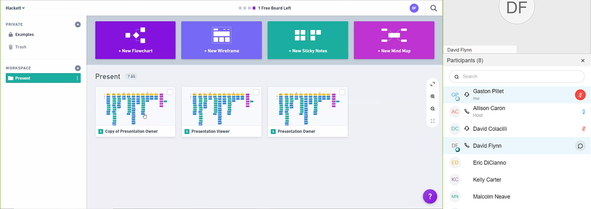
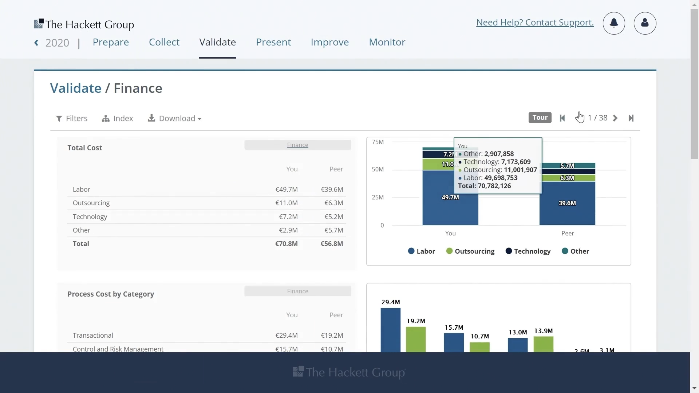
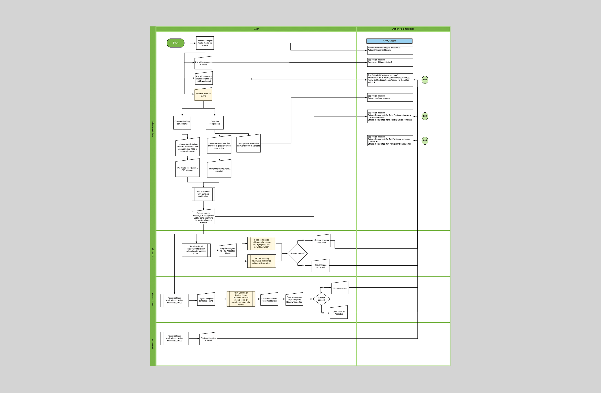
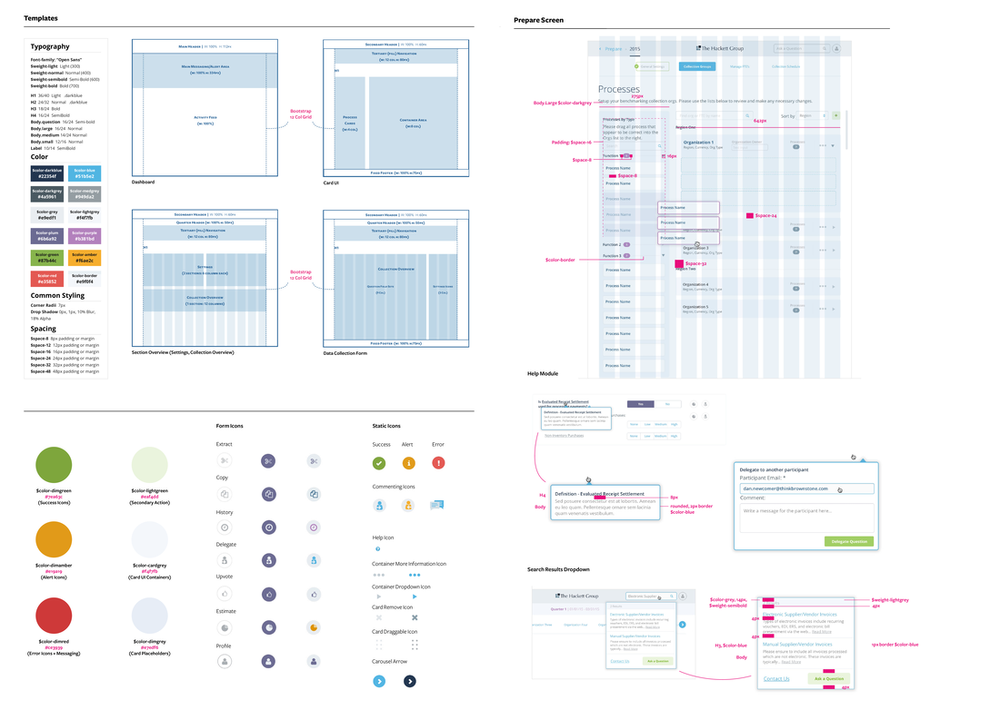
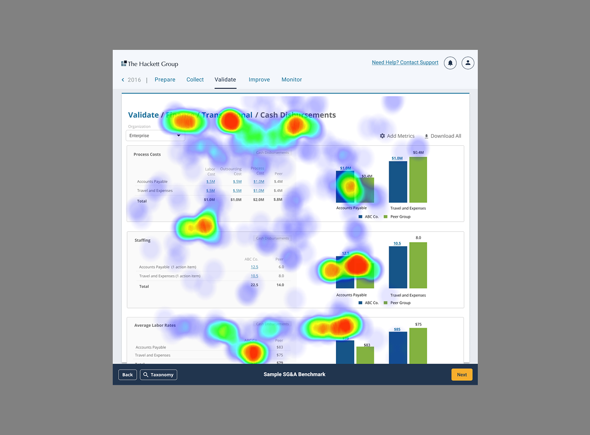

How I redesigned The Hackett Group's finance dashboard to help senior executives compare 15,000+ metrics efficiently and make data-driven strategic decisions

About The Hackett Group
The Hackett Group is an enterprise benchmarking platform that measures performance excellence, accelerates business transformation, and uncovers breakthrough business insights for Fortune 500 companies. The platform processes over 15,000 financial and operational metrics to help organizations compare their performance against industry peers and best-in-class performers.
The Challenge
The Hackett Group, a leader in enterprise benchmarking, faced a data accessibility paradox: despite possessing a rich repository of 15,000+ financial metrics, their legacy platform made extracting value nearly impossible. As Designer, I was tasked with transforming a dense data warehouse into an actionable SaaS intelligence tool. The challenge was to reduce severe cognitive overload for C-suite executives who needed to compare complex performance indicators against industry peers in real-time.
Discovery & Strategic Insights
I facilitated high-level stakeholder interviews with the CTO and CEO, alongside deep-dive sessions with data collectors, to understand the friction in the "Data-to-Decision" lifecycle.

Collaborative research and stakeholder interviews with The Hackett Group finance teams.
Key Strategic Insights:
- Users could not process 15,000 metrics linearly. The system lacked a mechanism to filter noise and highlight strategic opportunities.
- Raw numbers were meaningless without immediate comparison. Executives needed to see data side-by-side with industry benchmarks to understand their standing.
- The platform needed to serve two distinct personas: Data Collectors (who need granularity) and Executives (who need high-level synthesis).
Design Strategy & Implementation
To solve this, I moved away from static reporting to a Dynamic Comparative Architecture:
1. The Flexible Grid System
I architected a multi-panel dashboard that allows users to evaluate metric panels side-by-side.
- Strategic Value: This enabled simultaneous comparison of up to 4 distinct KPIs, replacing the need to open multiple browser tabs and fragment focus.

Final benchmarking dashboard featuring multi-panel comparison and excellence indicators.
2. Context-Preserving Navigation
Designed a "Quick-Switch" navigation pattern that allows users to toggle between different metric views instantly without reloading the page.
- Outcome: Eliminated friction in the analysis flow, keeping the user in a state of "flow" while exploring complex datasets.

User journey mapping core functionalities and roles within The Hackett Group platform.
3. Visual Hierarchy for "Excellence"
Implemented a strict data visualization framework using color-coded tiers to highlight the "Excellence Quadrant."
- Outcome: Executives can now scan thousands of data points and instantly identify high-impact areas where they outperform peers.

Design system and visual hierarchy for The Hackett Group benchmarking dashboard.
4. Bridging SaaS to Boardroom
Recognizing that executives often screenshot dashboards for slides, I designed a native Presentation Mode. This feature auto-formats live dashboard data into slide-ready reports, bridging the gap between the SaaS tool and executive meetings.
Validation & Iteration
We utilized Microsoft Clarity heatmaps and A/B testing to validate navigation paths.
- Outcome: Heatmaps revealed that users were ignoring deep-level menus. We iterated to surface critical "Excellence" metrics to the top-level hierarchy, validating the need for speed over depth for the Executive persona.

Heatmap analysis from Microsoft Clarity showing user interaction patterns on the dashboard.
Business Impact & Scale
The redesign successfully transformed a data repository into a decision engine:
Senior executives reduced analysis time from hours to minutes, enabling faster competitive positioning.
Successfully organized a massive dataset into an intuitive navigation structure without overwhelming the user.
Metric switching and comparison tasks are now performed 400% faster compared to the legacy system.
Reflection
- Scalability First: Designing for 15 metrics is easy; designing for 15,000 requires a robust, scalable system architecture, not just UI components.
- The "So What?" Factor: In B2B analytics, displaying data is not enough. The interface must answer "So what?" by visually emphasizing benchmarks and Excellence Quadrants.
- Operational Empathy: Building the Presentation Mode taught me that we must design for the user's entire workflow, even the parts that happen outside our software (like board meetings).
Interested in this approach?
I'd be happy to discuss how data-driven design and user-centered methodology can transform complex enterprise platforms.
Contact me